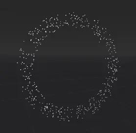
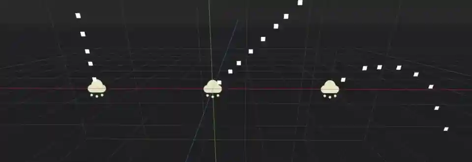
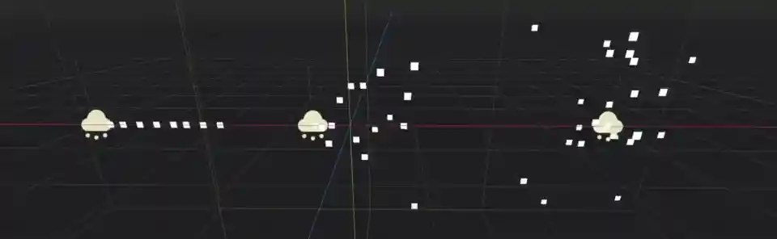
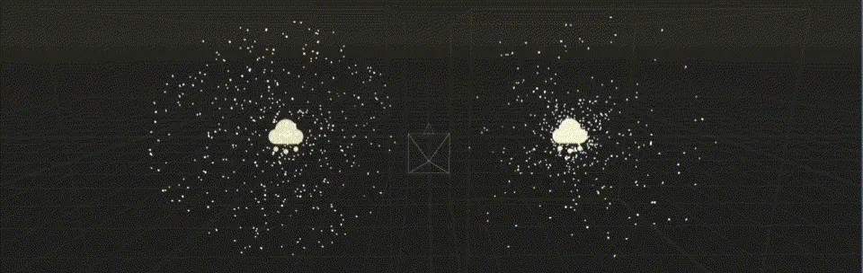
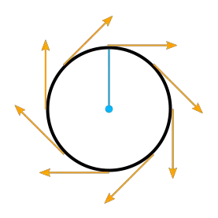
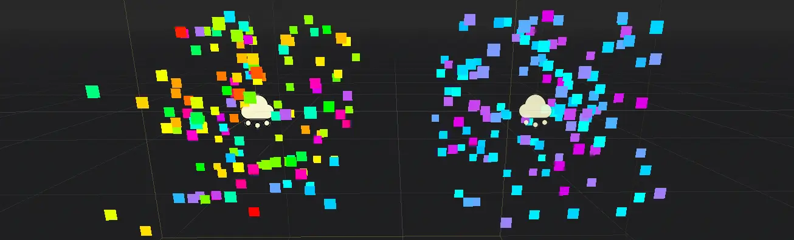
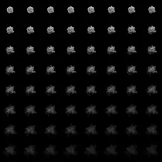
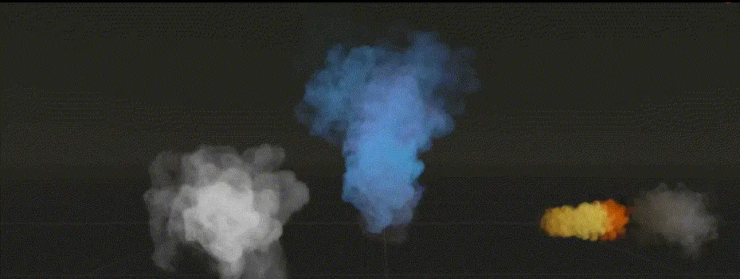

Process material properties

Min, max, and curve properties
The properties in this material control how particles behave and change over their lifetime.
A lot of them have Min, Max, and Curve values that allow you to fine-tune
their behavior. The relationship between these values is this: When a particle is spawned,
the property is set with a random value between Min and Max. If Min and Max are
the same, the value will always be the same for every particle. If the Curve is also set,
the value of the property will be multiplied by the value of the curve at the current point
in a particle's lifetime. Use the curve to change a property over the particle lifetime. Very
complex behavior can be expressed this way.
Note
This page covers how to use ParticleProcessMaterial for 3D scenes specifically. For information on how to use it in a 2D Scene see ParticleProcessMaterial 2D Usage.
Time
The Lifetime Randomness property controls how much randomness to apply to each particle's
lifetime. A value of 0 means there is no randomness at all and all particles live for
the same amount of time, set by the Lifetime property. A value of 1 means
that a particle's lifetime is completely random within the range of [0.0, Lifetime].
Particle flags
The Align Y property aligns each particle's Y-axis with its velocity. Enabling this
property is the same as setting the Transform Align property to
Y to Velocity.
The Rotate Y property works with the properties in the Angle and
Angular Velocity groups to control particle rotation. Rotate Y
has to be enabled if you want to apply any rotation to particles. The exception to this
is any particle that uses the Standard Material
where the Billboard property is set to Particle Billboard. In that case, particles
rotate even without Rotate Y enabled.
When the Disable Z property is enabled, particles will not move along the Z-axis.
Whether that is going to be the particle system's local Z-axis or the world Z-axis is
determined by the Local Coords property.
The Damping as Friction property changes the behavior of damping from a constant
deceleration to a deceleration based on speed.
Spawn
Emission shape
Particles can emit from a single point in space or in a way that they fill out a shape.
The Shape property controls that shape. Point is the default value. All
particles emit from a single point in the center of the particle system. When set to Sphere
or Box, particles emit in a way that they fill out a sphere or a box shape evenly.
You have full control over the size of these shapes. Sphere Surface works like Sphere,
but instead of filling it out, all particles spawn on the sphere's surface.

Particles emitting from a point (left), in a sphere (middle), and in a box (right)

A ring-shaped particle system
The Ring emission shape makes particles emit in the shape of a ring. You can control the ring's
direction by changing the Ring Axis property. Ring Height controls the thickness
of the ring along its axis. Ring Radius and Ring Inner Radius control how wide
the ring is and how large the hole in the middle should be. The image shows a particle
system with a radius of 2 and an inner radius of 1.5, the axis points along the
global Z-axis.
In addition to these relatively simple shapes, you can select the Points or
Directed Points option to create highly complex emission shapes. See the
Complex emission shapes section for a detailed
explanation of how to set these up.
Angle
The Angle property controls a particle's starting rotation as described above.
In order to have an actual effect on the particle, you have to enable one of two properties: Rotate Y
rotates the particle around the particle system's Y-axis. The Billboard property in
the Standard Material, if it is set to Particle Billboard, rotates
the particle around the axis that points from the particle to the camera.
Direction
Note
The Direction property alone is not enough to see any particle movement. Whatever
values you set here only take effect once velocity or acceleration properties are set, too.
The Direction property is a vector that controls each particle's direction of movement
at the moment it is spawned. A value of (X=1,Y=0,Z=0) would make all particles move
sideways along the X-axis. For something like a fountain where particles shoot out up in the
air, a value of (X=0,Y=1,Z=0) would be a good starting point.

Different direction values: Y-axis only (left), equal values for X and Y (middle), X and Y with gravity enabled (right)
After setting a direction, you will notice that all particles move in the same direction in
a straight line. The Spread property adds some variation and randomness to each particle's
direction. The higher the value, the stronger the deviation from the original path. A value
of 0 means there is no spread at all while a value of 180 makes particles shoot out in
every direction. You could use this for something like pieces of debris during an explosion effect.

No spread (left), 45 degree angle (middle), full 180 degrees (right)
The Flatness property limits the spread along the Y-axis. A value of 0 means there
is no limit and a value of 1 will eliminate all particle movement along the Y-axis. The
particles will spread out completely "flat".
You won't see any actual movement until you also set some values for the velocity and acceleration properties below, so let's take a look at those next.
Initial velocity
While the Direction property controls a particle's movement direction, the Initial Velocity
controls how fast it goes. It's separated into Velocity Min and Velocity Max, both
set to 0 by default, which is why you don't see any movement initially. As soon as you set
values for either of these properties as described above, the
particles begin to move. The direction is multiplied by these values, so you can make particles
move in the opposite direction by setting a negative velocity.
Accelerations
Gravity
The next few property groups work closely together to control particle movement and rotation.
Gravity drags particles in the direction it points at, which is straight down at the strength
of Earth's gravity by default. Gravity affects all particle movement.
If your game uses physics and the world's gravity can change at runtime, you can use this property
to keep the game's gravity in sync with particle gravity. A Gravity value of (X=0,Y=0,Z=0) means
no particle will ever move at all if none of the other movement properties are set.

Left: (X=0,Y=-9.8,Z=0), middle: (X=0,Y=9.8,Z=0), right: (X=4,Y=2,Z=0).
Angular velocity
Angular Velocity controls a particle's speed of rotation as described above.
You can reverse the direction by using negative numbers for Velocity Min or Velocity Max. Like the
Angle property, the rotation will only be visible if the Rotate Y flag is set
or the Particle Billboard mode is selected in the Standard Material.
Note
The Damping property has no effect on the angular velocity.
Linear acceleration
A particle's velocity is a constant value: once it's set, it doesn't change and the particle will
always move at the same speed. You can use the Linear Accel property to
change the speed of movement over a particle's lifetime as described above.
Positive values will speed up the particle and make it move faster. Negative values will slow it
down until it stops and starts moving in the other direction.

Negative (top) and positive (bottom) linear acceleration
It's important to keep in mind that when we change acceleration, we're not changing the velocity
directly, we're changing the change in velocity. A value of 0 on the acceleration curve
does not stop the particle's movement, it stops the change in the particle's movement. Whatever
its velocity was at that moment, it will keep moving at that velocity until the acceleration is
changed again.
Radial acceleration
The Radial Accel property adds a gravity-like force to all particles, with the origin
of that force at the particle system's current location. Negative values make particles move
towards the center, like the force of gravity from a planet on objects in its orbit. Positive
values make particles move away from the center.

Negative (left) and positive (right) radial acceleration
Tangential acceleration

Tangents on a circle
This property adds particle acceleration in the direction of the tangent to a circle on the particle system's XZ-plane with the origin at the system's center and a radius the distance between each particle's current location and the system's center projected onto that plane.
Let's unpack that.
A tangent to a circle is a straight line that "touches" the circle in a right angle to the circle's radius at the touch point. A circle on the particle system's XZ-plane is the circle that you see when you look straight down at the particle system from above.

Tangential acceleration from above
Tangential Accel is always limited to that plane and never move particles along the system's Y-axis.
A particle's location is enough to define such a circle where the distance to the system's center is
the radius if we ignore the vector's Y component.
The Tangential Accel property will make particles orbit the particle system's center, but the
radius will increase constantly. Viewed from above, particles will move away from the center
in a spiral. Negative values reverse the direction.
Damping
The Damping property gradually stops all movement. Each frame, a particle's movement
is slowed down a little unless the total acceleration is greater than the damping effect. If
it isn't, the particle will keep slowing down until it doesn't move at all. The greater the value, the less
time it takes to bring particles to a complete halt.
Attractor interaction
If you want the particle system to interact with particle attractors,
you have to check the Enabled property. When it is disabled, the particle system
ignores all particle attractors.
Display
Scale
Scale controls a particle's size as described above. You can set
different values for Scale Min and Scale Max to randomize each particle's size. Negative values
are not allowed, so you won't be able to flip particles with this property. If you emit particles as
billboards, the Keep Size property on the Standard Material
in your draw passes has to be enabled for any scaling to have an effect.
Color
The Color property controls a particle's initial color. It will have an effect only after the
Use As Albedo property in the Vertex Color group of the Standard Material
is enabled. This property is multiplied with color coming from the particle material's
own Color or Texture property.

Setting up a color ramp
There are two Ramp properties in the Color group. These allow you to define a range of colors
that are used to set the particle's color. The Color Ramp property changes a particle's color
over the course of its lifetime. It moves through the entire range of colors you defined.
The Color Initial Ramp property selects the particle's initial color from a random
position on the color ramp.
To set up a color ramp, click on the box next to the property name and from the dropdown menu
select New GradientTexture1D. Click on the box again to open the texture's details.
Find the Gradient property, click on the box next to it and select New Gradient.
Click on that box again and you will see a color range. Click anywhere on that range
to insert a new marker. You can move the marker with the mouse and delete it by clicking
the right mouse button. When a marker is selected, you can use the color picker next to
the range to change its color.
Hue variation
Like the Color property, Hue Variation controls a particle's color, but in a
different way. It does so not by setting color values directly, but by
shifting the color's hue.
Hue describes a color's pigment: red, orange, yellow, green and so on. It does not
tell you anything about how bright or how saturated the color is. The Hue Variation
property controls the range of available hues as described above.
It works on top of the particle's current color. The values you set for
Variation Min and Variation Max control how far the hue is allowed to shift
in either direction. A higher value leads to more color variation while a low value
limits the available colors to the closest neighbors of the original color.

Different values for hue variation, both times with blue as base color: 0.6 (left) and 0.1 (right)
Animation
The Animation property group controls the behavior of sprite
sheet animations in the particle's Standard Material.
The Min, Max, and Curve values work as described above.
An animated sprite sheet is a texture that contains several smaller images aligned on a grid. The images are shown one after the other so fast that they combine to play a short animation, like a flipbook. You can use them for animated particles like smoke or fire. These are the steps to create an animated particle system:

An 8x8 animated smoke sprite sheet
Import a sprite sheet texture into the engine. If you don't have one at hand, you can download the
high-res version of the example image.Set up a particle system with at least one draw pass and assign a
Standard Materialto the mesh in that draw pass.Assign the sprite sheet to the
Textureproperty in theAlbedogroupSet the material's
Billboardproperty toParticle Billboard. Doing so makes theParticles Animgroup available in the material.Set
H Framesto the number of columns andV Framesto the number of rows in the sprite sheet.Check
Loopif you want the animation to keep repeating.

That's it for the Standard Material. You won't see any animation right away. This is
where the Animation properties come in. The Speed properties control how fast
the sprite sheet animates. Set Speed Min and Speed Max to 1 and you should see the
animation playing. The Offset properties control where the animation starts on a
newly spawned particle. By default, it will always be the first image in the sequence.
You can add some variety by changing Offset Min and Offset Max to randomize
the starting position.

Three different particle systems using the same smoke sprite sheet
Depending on how many images your sprite sheet contains and for how long your particle is alive, the animation might not look smooth. The relationship between particle lifetime, animation speed, and number of images in the sprite sheet is this:
Note
At an animation speed of 1.0, the animation will reach the last image
in the sequence just as the particle's lifetime ends.
If your sprite sheet contains
64 (8x8) images and the particle's lifetime is set to 1 second, the animation
will be very smooth at 64 FPS (1 second / 64 images). if the lifetime is set to 2 seconds, it
will still be fairly smooth at 32 FPS. But if the particle is alive for
8 seconds, the animation will be visibly choppy at 8 FPS. In order to make the
animation smooth again, you need to increase the animation speed to something like 3
to reach an acceptable framerate.

The same particle system at different lifetimes: 1 second (left), 2 seconds (middle), 8 seconds (right)
Note that the GPUParticles3D node's Fixed FPS also affects animation playback. For smooth animation playback, it's recommended to set it to 0 so that the particle is simulated on every rendered frame. If this is not an option for your use case, set Fixed FPS to be equal to the effective framerate used by the flipbook animation (see above for the formula).
Turbulence
Turbulence adds noise to particle movement, creating interesting and lively patterns.
Check the box next to the Enabled property to activate it. A number
of new properties show up that control the movement speed, noise pattern and overall influence
on the particle system. You can find a detailed explanation of these in the section on
particle turbulence.
Collision
The Mode property controls how and if emitters collide with particle collision nodes. Set it
to Disabled to disable any collision for this particle system. Set it to Hide On Contact
if you want particles to disappear as soon as they collide. Set it to Constant to make
particles collide and bounce around. You will see two new properties appear in the inspector.
They control how particles behave during collision events.
A high Friction value will reduce sliding along surfaces. This is especially
helpful if particles collide with sloped surfaces and you want them to stay in
place instead of sliding all the way to the bottom, like snow falling on a mountain.
A high Bounce value will make particles bounce off surfaces they collide with,
like rubber balls on a solid floor.
If the Use Scale property is enabled, the collision base size
is multiplied by the particle's current scale. You can use this to
make sure that the rendered size and the collision size match for particles
with random scale or scale that varies over time.
You can learn more about particle collisions in the Collisions section in this manual.
Sub-emitter

The available sub-emitter modes
The Mode property controls how and when sub-emitters are spawned. Set it to Disabled
and no sub-emitters will ever be spawned. Set it to Constant to make sub-emitters
spawn continuously at a constant rate. The Frequency property controls how often
that happens within the span of one second. Set the mode to At End to make the sub-emitter
spawn at the end of the parent particle's lifetime, right before it is destroyed. The
Amount At End property controls how many sub-emitters will be spawned. Set the
mode to At Collision to make sub-emitters spawn when a particle collides with the
environment. The Amount At Collision property controls how many sub-emitters will be spawned.
When the Keep Velocity property is enabled, the newly spawned sub-emitter starts off
with the parent particle's velocity at the time the sub-emitter is created.
See the Sub-emitters section in this manual for a detailed explanation of how to add a sub-emitter to a particle system.
Customizing the process material
If you need to change or implement new behaviors in shader code, you can do so by converting the current ParticleProcessMaterial to a ShaderMaterial. Existing properties are preserved by the conversion process. Features that are enabled will also affect what's present in the converted shader code.
To do so, right-click on the material in the FileSystem dock and choose Convert to ShaderMaterial. You can also do so by right-clicking on any property holding a reference to the material in the inspector.